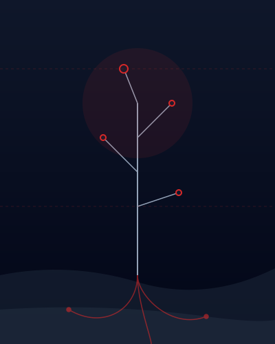

Bereksperimen untuk Masa Depan yang Berkelanjutan.
Karpten adalah ruang untuk eksperimen, kreasi, dan solusi berkelanjutan, menggabungkan teknologi, AI, dan pertanian modern.
Laboratorium kreatif di mana kecerdasan bertemu dengan alam.
Kami percaya bahwa tantangan paling kompleks saat ini membutuhkan perpaduan seimbang antara teknologi tinggi dan sistem biologis yang terukur. Karpten bukan sekadar perusahaan; kami adalah studio eksperimental yang berfokus pada pemikiran jangka panjang.
Dengan mengintegrasikan AI ke dalam sektor pertanian, kami mengembangkan solusi yang tidak hanya efisien tetapi juga regeneratif. Kami tidak hanya menyelesaikan masalah; kami membangun sistem yang bertahan lama.
Digerakkan oleh Pemikiran Sistem
Teknologi
Membangun fondasi perangkat lunak dan keras yang menggerakkan transformasi industri modern.
Kecerdasan Buatan (AI)
Memanfaatkan deep learning dan analitik prediktif untuk optimasi sumber daya dan pengambilan keputusan.
Pertanian Modern
Menyintesis kearifan biologis dengan teknik berbasis data untuk ekosistem pangan yang berkelanjutan.

Dibangun dengan Tujuan
Eksperimentasi
Kami tidak takut gagal. Penemuan hidup di tepi ketidaktahuan.
Keberlanjutan
Setiap solusi harus memberikan kontribusi lebih banyak kepada ekosistem daripada yang diambil.
Arsitektur Sistem
Kami menyelesaikan masalah secara menyeluruh, bukan hanya bagian-bagiannya. Integrasi adalah segalanya.
Siap untuk berevolusi?
Bergabunglah dengan kami dalam menciptakan generasi sistem berkelanjutan berikutnya. Kami selalu terbuka untuk kolaborasi.
Hubungi Kami